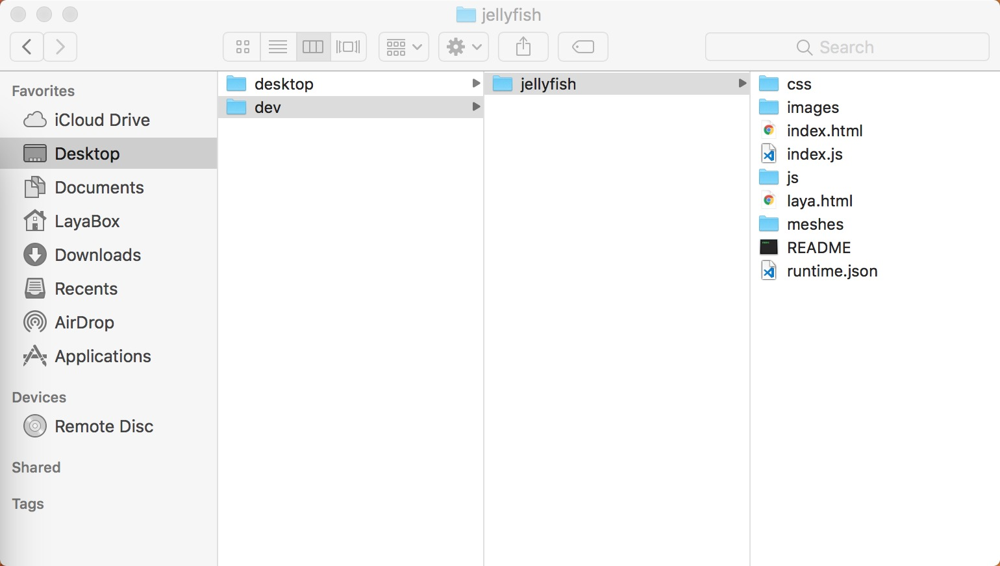
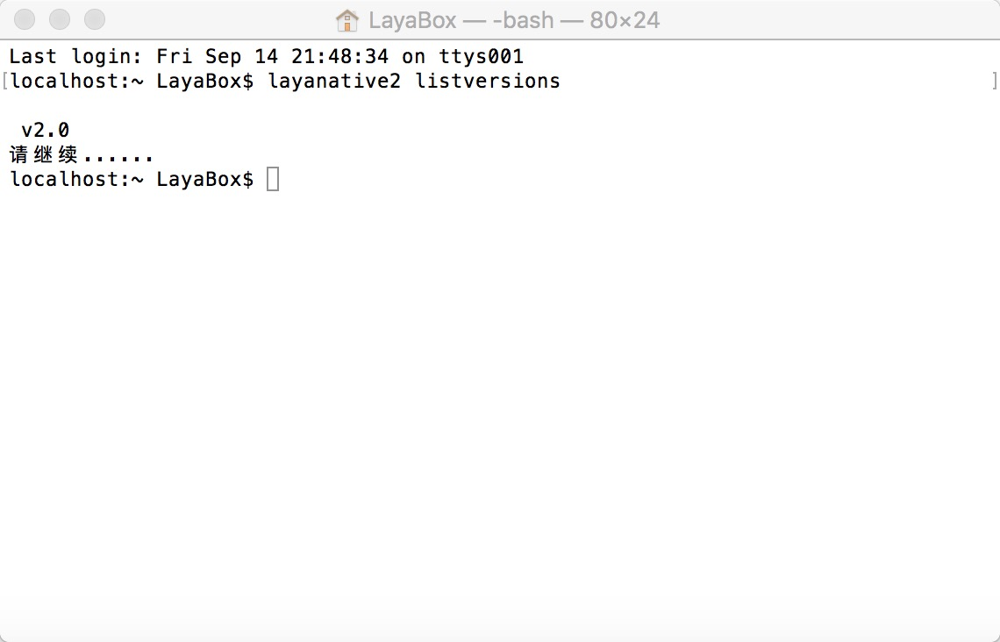
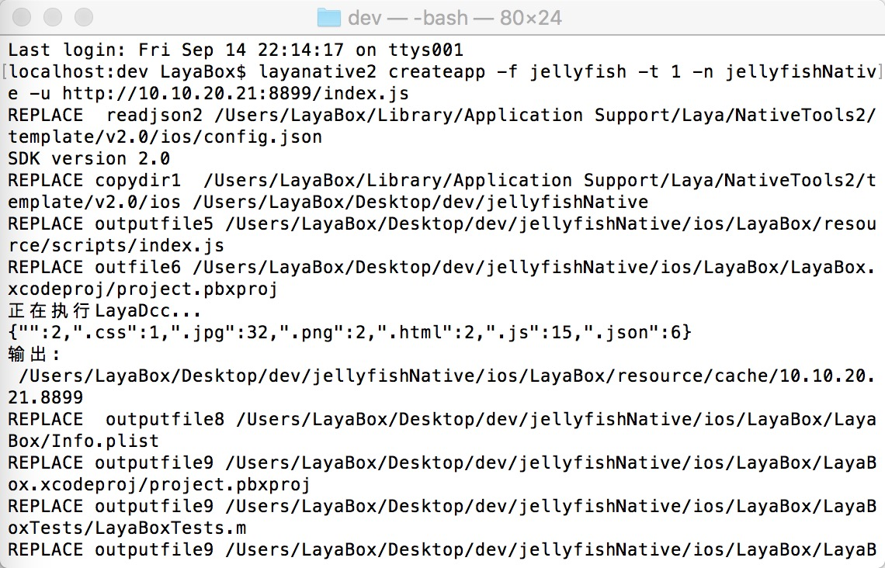
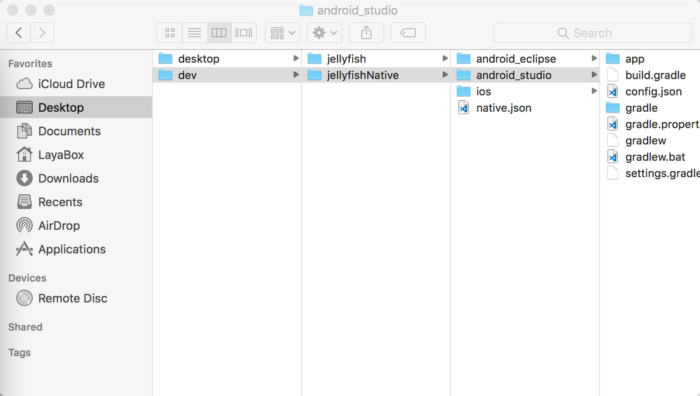
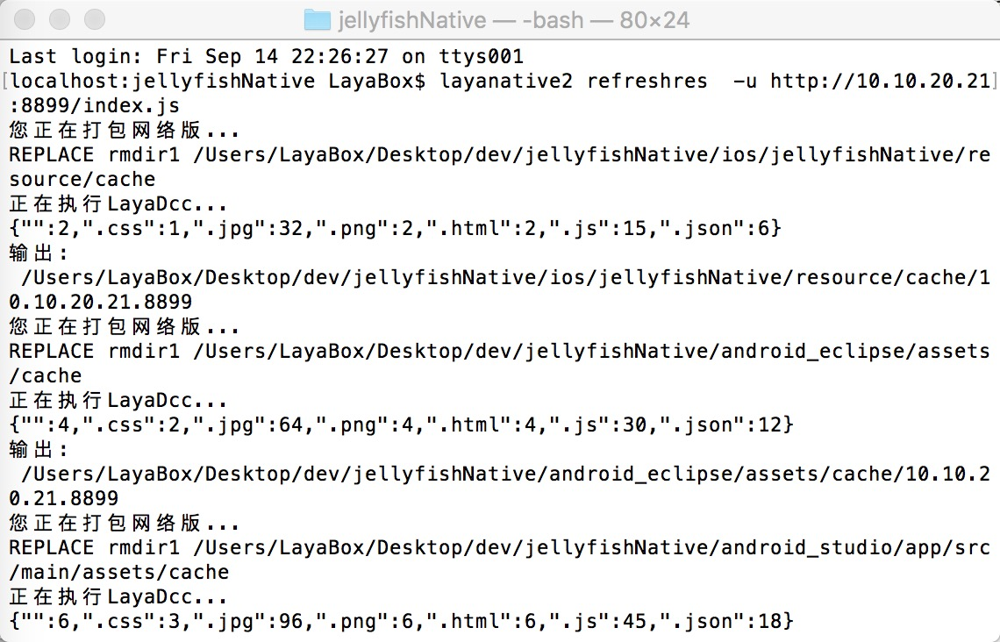
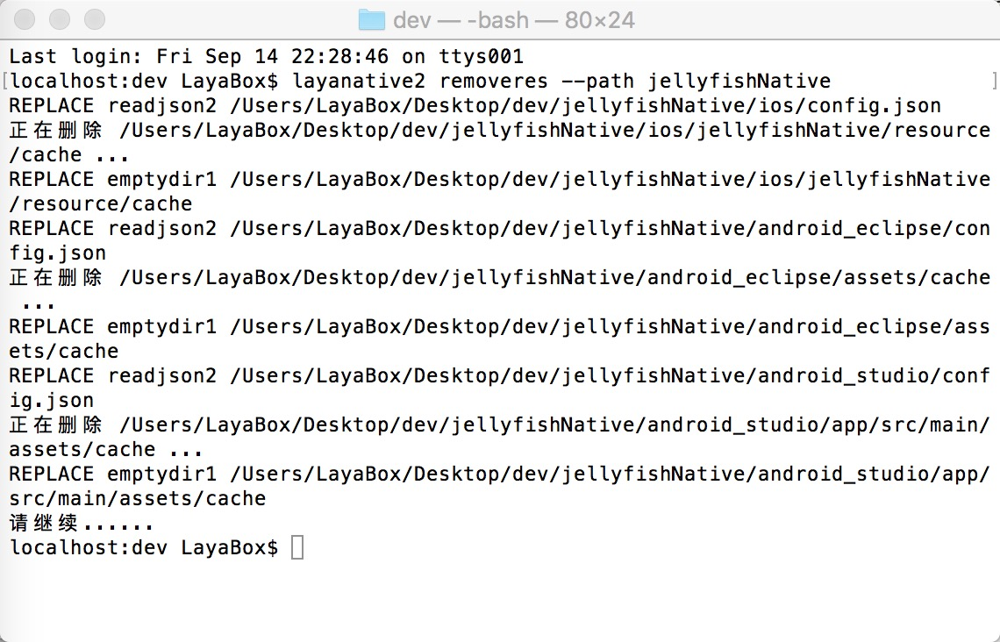
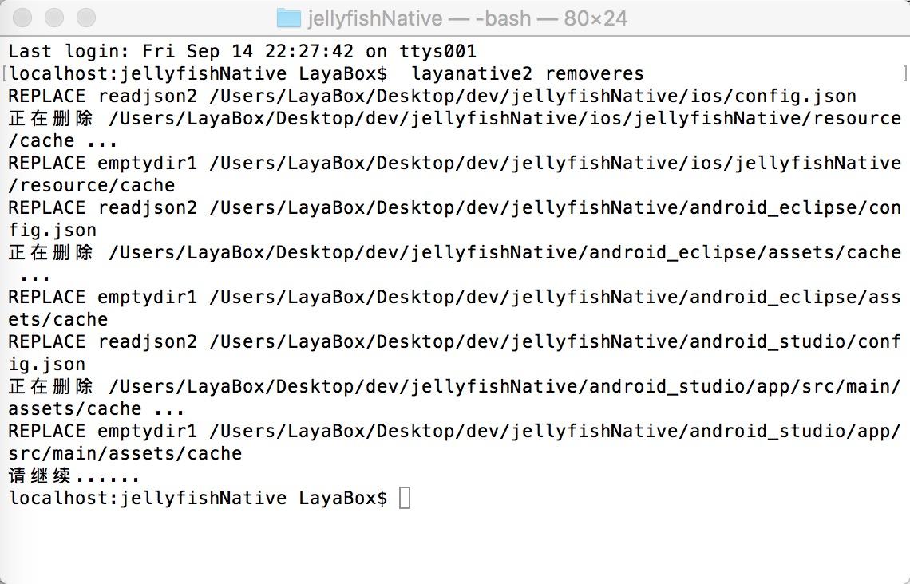

LayaNative命令行工具
layanative命令行工具用来生成Android和iOS原生项目，以及项目的资源刷新功能， 方便项目迭代过程中的资源更新。
1.命令详解
1.安装layanative
windows
$ npm install -g layanative3
mac
$ sudo npm install -g layanative3
1.查看SDK版本信息
SDK就是native项目的模板。listversion命令会列出当前所有可用的SDK版本信息，在下面创建native项目的时候可以通过参数指定需要的版本。
$ layanative3 listversions
2.创建native项目
createapp命令用于创建native项目
可以先用下面的命令查看下命令createapp的帮助信息
$ layanative3 createapp --help
用法:
layanative3 createapp [-f res_path] [--path output_path] [-s sdk_path | -v version] [-p all|ios|android_studio] [-t 0|1|2] [-u url] [-n project_name] [-a app_name] [--package_name package_name]
参数说明:
| 关键字 | 描述 |
|---|---|
--folder,-f |
资源路径：把游戏资源打包进客户端以减少网络下载,选择本地的游戏目录，例如启动index在d:/game/index.js下,那资源路径就是d:/game。t为0时可不填 |
--path |
native项目输出目录 [默认值: "."] |
--version，-v |
SDK版本：自动使用特定版本的SDK，系统会从服务器下载SDK并存放在特定位置。--version和--sdk互相矛盾不能同时指定，都不指定时默认使用最新版本的SDK |
--platform, -p |
项目平台 [可选值: all, ios, android_studio][默认值: all] |
--type, -t |
创建类型 [0: 不打资源包 1: 打资源包 2: 单机版本] [默认值: 0] |
--url, -u |
游戏地址 [当t为0或者1的时候，必须填，当t为2的时候，不用填写] |
--name, -n |
项目名称：native项目的名称 [默认值: LayaBox] |
--app_name, -a |
应用名称：app安装到手机后显示的名称 [默认值: LayaBox] |
--package_name |
包名 [默认值: com.layabox.game] |
--sdk,-s |
SDK本地目录：自定义的SDK目录，可选参数。断网情况下使用，一般情况下建议使用参数--version。 |
当type为1或2时会打资源包到native项目，为0时不打。打包资源底层实际是调用dcc的方法。打包资源dcc相关，参考 LayaDcc工具。
可以用--path参数指定项目的输出路径，默认输出到当前路径下。
根据-v使用v2.0版本的SDK
$ layanative3 createapp -f SnowBallH5 -t 1 -n SnowBallNative -u http://10.10.20.102:8899/index.js -v v2.0
既没指定-v也没指定-s，使用最新版本的SDK
$ layanative3 createapp -f SnowBallH5 -t 1 -n SnowBallNative -u http://10.10.20.102:8899/index.js
用--version或者-v指定版本需要联网环境，断网情况下可以用--sdk或者-s指定SDK目录。SDK下载地址
$ layanative3 createapp -f SnowBallH5 -t 1 -n SnowBallNative -u http://10.10.20.102:8899/index.js -s D:/v2.0
3.刷新native项目资源包
refreshres命令用于刷新native项目的资源包
项目迭代过程中，h5项目有了修改，可以用refreshres命令，重新打包刷新资源和代码到native项目中。
用法:
layanative3 refreshres [-p all|ios|android_studio] [--path path] [-u url]
参数说明:
| 关键字 | 描述 |
|---|---|
--platform, -p |
项目平台 [可选值: all, ios, android_studio][默认值: all] |
--path |
native项目路径 [默认值: "."] |
--url, -u |
游戏地址 |
如果创建的项目是单机版，refreshres时不需要输入url。如果输入网络版url，打的是网络版的资源包，那么还需要更改项目代码，才能变成网络版的项目。
如果创建的项目是网络版，refreshres时必须输入url。如果输入新的地址，那么还要更改项目中设置url的代码，才能完成URL的替换。如果输入单机版地址，打的是单机版的资源包，那么还需要更改项目代码，才能变成单机版的项目。
手动切换单机版和网络版相关，参考 LayaBox 构建工具。
createapp时把资源路径写在了生成的native项目目录下的native.json文件中。如果后来资源移到了别的地方，会报错找不到资源目录。createapp时，如果-t参数指定为0时，不打资源，可以不指定资源路径参数，native.json中写的资源路径为空，这种项目refreshres时会报资源路径为空的错误。上述两种情况可以手动修改native.json文件，指定正确的资源路径。
4.删除native项目资源包
removeres命令用于删除native项目的资源包
用法:
layanative3 removeres [--path path]
参数说明:
| 关键字 | 描述 |
|---|---|
--path |
native项目路径 [默认值: "."] |
3.应用实例
1.首先建立下图所示的目录结构。jellyfish是html5项目目录

2.查看SDK版本信息

3.创建native项目

4.生成下图所示目录结构。

5.随时刷新资源包
在dev目录下，通过--path指定native工程的目录
进入native项目目录，不需要指定--path参数了

5.如果不需要资源包，删除它
在dev目录下，通过--path指定native工程的目录

进入native项目目录，不需要指定--path参数了
